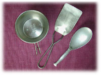

|
■女ごころ系宇宙
その昔、猛烈な夫婦喧嘩をして、どうしても腹の虫がおさまらず、２人で貯めていたものに手をつけ、買物をしまくったというひとの話を聞いたことがある。彼女は贅沢好みでもなければ、買物狂でもなく、その感覚はどちらかというと倹（つま）しい方だ。
「どんなものを、いくらくらい買ったの？」
「洋服。靴。鞄。帽子。しめて２０万円」
「……」
彼女は私の叔母である。叔母が２０万円使ったのはいまから４０年も前のはなしだから、２０万円の価値は現在の４倍から５倍にあたるのではないか。打ち明けるたびに、相手の顔の色が変わったというくらいだから。
「それで気が晴れたの？」
「すかっとしたわよ。あとで自分が困ったから、制裁も受けたことになるわね。でもああいう思いきった買物はあのとき一度。いい思い出なのよ」
叔母はそのとき買ったという茶色いハンドバックを私にゆずってくれた１年後、６０歳で亡くなった。とり出して腕にかけるたびに、叔母がデパートで、ハンドバックの持ち手をつかみぐっと前に押し出して、
「これ、ください」
と言っているところを想像してしまう。同時に叔母の女ごころを想って、しみじみするのだ。
ものを買って憂さを晴らすというのは、「女ごころ系宇宙」で起こる現象ではないか。なかにはバカヤロウと叫んで、相手をぶん殴る勇ましい女（ひと）もいるかもしれないし、カッとなって秋物の背広を買ってしまった男（ひと）もいるかもしれないが、まあ、最近薄れていく一方の「女ごころ」を保存したいという気持ちに免じて、ここは無理やり「女ごころ系宇宙」というはなしにさせてもらいたい。
ええと、私にも「女ごころ」がひそむ証拠に、ときにはものを買って気晴らしをする。どんなものを買うかって？ 食べるもの、器、台所用品、ぼたんなど。
「ずいぶんとまた、所帯じみているねえ」
と友だちが言う。
「そうかなあ」
「だいたいあなたには、物欲ってものが希薄だわよ」
いいや、私にも物欲はある。衝動買いも無駄づかいもあまりしていないつもりだが、ほしいとなったらあきらめのいい方ではない。けれども、ほしいなあ、と思いはじめてから、しばらく考えている。なぜほしいのか。ほんとに必要なのか。まだほしいのか、という具合に、時間をかせぐ。
私のなかで物欲よりもまさっているのが、「持たない欲」、「減らし欲」。持たないですむものなら持たずにすませたい。心身ともに健康なときには心からそう思っているが、疲れがたまったり、なにかの拍子に気持ちがどんよりしてくるというと、ぐぐぐぐぐっとひっぱられるようにおかしな物欲が湧く。ものがほしいというより、ものが買いたくなってくるのだ。「女ごころ系宇宙」にも、そんなブラックホールが存在する。ほしいというのと買いたいというのは似て非なるもの、買いたい気分だけに押されて手に入れたものはあとで邪魔になることが多い。
「じゃあいま、ほしいけど、いるかいらないかって考えてるもの、ある？」
「三角」
「サンカク？ サンカクって、まさかあの台所の流しに置く三角じゃないでしょうねえ」
「その三角よ」
「あなたねえ、三角なんてものはどれも同じような物じゃあないの？」
なんのなんの。これが同じじゃないんである。プラスティック製のがあると思えば、アルミありステンレスあり。その上大きさもさまざま。「三角でござい」と幅をきかせる大きなものから、「え、私？名のるほどの者じゃござんせんが、台所の流しに置いて、ごみでも入れていただこうかと思ってるんですよ」というような風情の、こぢんまりしたものまで。
台所を担当するようになって、かれこれ２０年近く。その間に私は一度も三角をもったことがないのだ。流し関係でいうなら、洗いおけというのももったことがない。それなのに、ここへきて三角がほしくなったきっかけは、ごみの問題が自分の胸にも、台所にも迫ってきたからだった。これまでは新聞広告の上に生ごみを集めて包み、そのままごみ箱に捨てていたが、一回専用の容器のなかにおさめ、確認してから捨てたいと思うようになった。また、水切りをちゃんとしたいというのも理由のひとつだ。三角いるかいらないか、考えること２ヵ月半。とうとう、これだと思う三角にめぐり会った。通信販売のカタログのなかでみつけたそれは、比較的小ぶりのステンレス製。ふたまで付いている。
届く日を待ついまの気持ちは、ときめく女ごころといったとことか。
■お焼き（１２〜１５個）
〈皮〉
強力粉……………………………山もり２カップ
ぬるま湯…………………………………１カップ
〈なかみ〉
ひき肉……………………………………１５０g
野沢菜……………………………………１２０g
にんじん………………………………２分の１本
長ねぎ…………………………………２分の１本
（ほかに筍、しいたけ、にら、さやえんどう、春雨、ひじきなどをうまくとり合わせる）
小麦粉………………………………… 大さじ２
・ボールに強力粉を入れ、箸で混ぜながらぬるま湯を加え、１時間ほどおくる。←a
・ひき肉と、こまかく刻んだ野沢菜・野菜を、少量のごま油で炒め、塩こしょう、しょうゆ、砂糖（これはかくし味にほんのちょっぴり）で味をととのえる。
・なかみをまとめるため、最後に小麦粉を少量ふり入れて炒める。
・aを、水をつけた手で（ここで初めて手で）よくこね、てのひらの上に、梅の実くらいの大きさにとり、ひろげる。なかみを包む。
・熱して油をひいた天板（ホットプレートやフライパンで）の上に置く。フライ返しで平たく押してつぶすようにして焼く。フライパンで焼く場合は、弱火でゆっくり焼く
こと。
・両面においしそうな焼き色がついたらでき上がり。

|